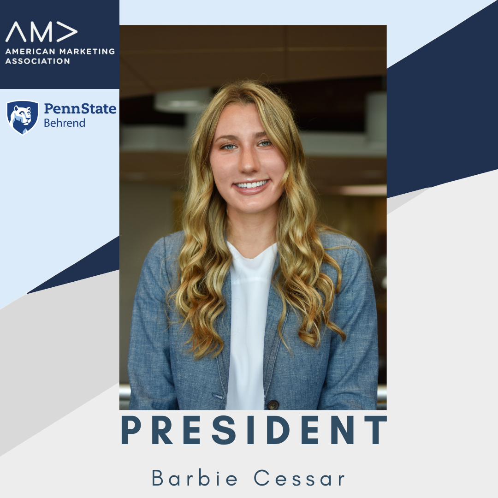
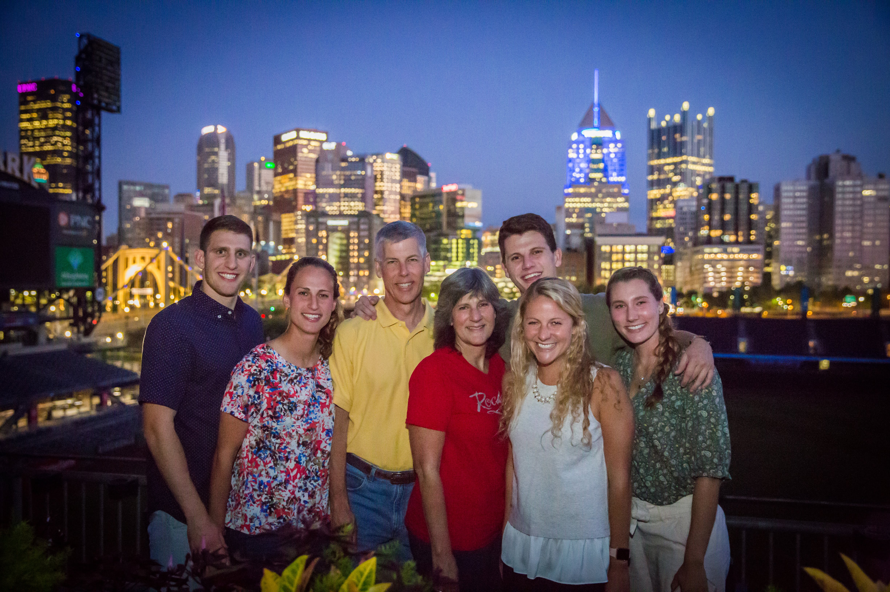

Hello! My real name is Barbara. I'm named after my Grandmother. I go by Barbie, but my close friends and family call me Babz! I’m originally from Slippery Rock, PA. I am the youngest child in my family. I have two older sisters and one older brother. I also have a dog that I loved dearly named Caddie and she is an English Setter.
Being creative has been an outlet for me since I was very young. I have always enjoyed drawing, painting, and making anything I could. When I graduated highschool, I was looking for a major that I could still be creative in. I was interested in Behrend’s Digital Arts, Media, and Technology (DIGIT) program because I could still be creative through technology and learn more about coding.
I am highly involved here at Behrend. Outside of academics, I am captain of the Behrend Swim Team and President of the American Marketing Association. I have been competitively swimming since I was five years old. I started off doing almost every sport when I was younger and eventually focused solely on swimming when I went to college. Swimming has taught me a lot about perseverance, grit, and determination. Most of all I know what it’s like to work together with a team in order to achieve a goal. I also have experience with taking on a leadership role in both swimming and in my club.
After being at Behrend for a while, I found myself looking into the business world. I then became interested in marketing because I could implement my designing skills in graphics and advertisements. After taking a few classes in marketing I realized my passion for data visualization. Therefore, I know the marketing side of things and I also know how to analyze what marketing techniques are productive and beneficial. I have enjoyed learning useful marketing tactics, coding, analyzing metric data, working with databases, creating useful visualizations, and designing flyers and advertisements during my years at Behrend. Over the years I’ve become proficient in using Adobe Photoshop, Oxygen XML Editor, Adobe Dream Weaver, Tableau, Microsoft Excel, Microsoft SQL Server Management Studio, Hootsuite, and Canva. My vast skills in coding, designing, marketing, and data visualizations make me very unique and an asset to any future company.